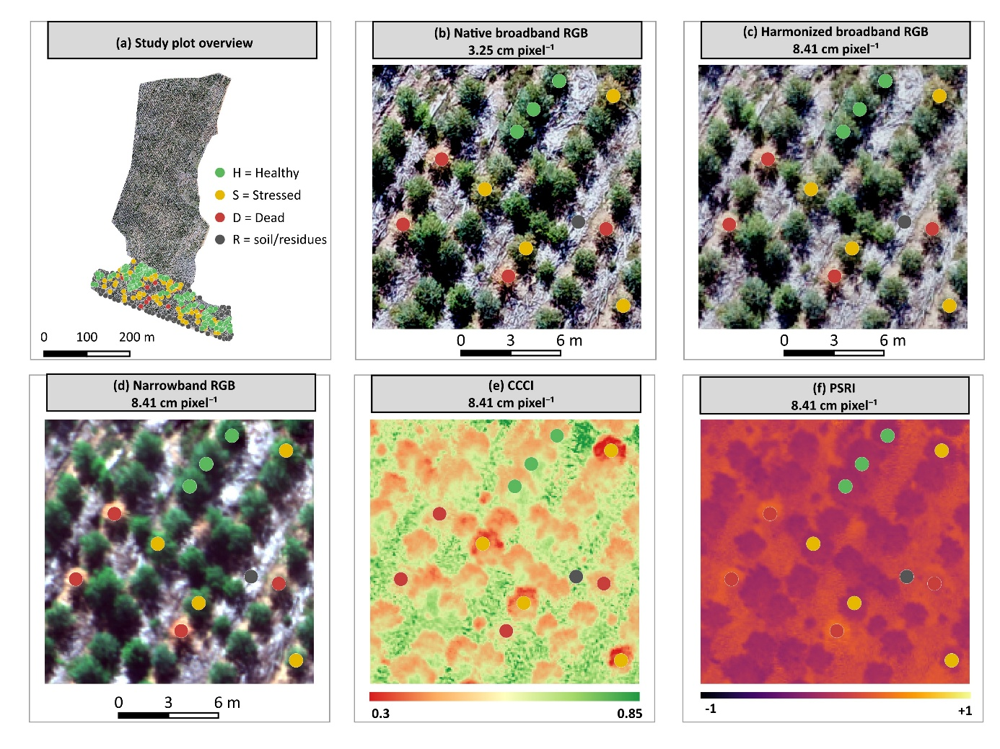

2 · Building the five representations¶

The same ground area in the five representations (paper, Fig. 4).
Native broadband RGB¶
The Phantom orthomosaic stays at its native 3.25 cm. The code expects one GeoTIFF per band:
cd linux/rgb_drone
gdal_translate -b 1 rgb_orthomosaic.tif b1_red.tif
gdal_translate -b 2 rgb_orthomosaic.tif b2_green.tif
gdal_translate -b 3 rgb_orthomosaic.tif b3_blue.tif
Leave the data type unchanged (8- or 16-bit). The extraction step reads values as float32 and applies a percentile stretch fitted on this raster (step 4).
Spatially harmonized broadband RGB¶
Script: linux/rgb_degradado/harmonize_rgb_to_rededge_explicit.py
Each native RGB band is resampled onto the exact RedEdge-MX grid by area-weighted averaging. The multispectral raster is used only for geometry: CRS, transform (pixel size, origin, alignment), width, height and extent. No spectral information is transferred.
flowchart LR
R[b1_red.tif<br/>3.25 cm] --> W
G[b2_green.tif] --> W
B[b3_blue.tif] --> W
M[red_micasense.tif<br/>grid reference only] -. CRS, transform,<br/>width, height .-> W
W["rasterio.warp.reproject<br/>Resampling.average"] --> O[b*_degradado.tif<br/>8.41 cm, float32, NaN nodata]-
Edit the constants at the top of the script. The paths are absolute and point to the original author's machine.
RGB_BANDS = { "R": "/path/to/rgb_drone/b1_red.tif", "G": "/path/to/rgb_drone/b2_green.tif", "B": "/path/to/rgb_drone/b3_blue.tif", } MULTISPECTRAL_REFERENCE_PATH = "/path/to/rgb_micasense/b1_red.tif" # any co-registered RE-MX band OUTPUT_DIR = Path("/path/to/rgb_degradado") EXPECTED_GSD_METERS = 0.0841 # abort if the reference grid differs (tolerance 1e-4 m) -
Run the script:
-
The script audits its own output and raises an error unless each output band has the same CRS, transform, width and height as the reference, and the three outputs share one grid.
Core operation, per band:
dst = np.full((ref.height, ref.width), np.nan, dtype=np.float32)
reproject(
source=rasterio.band(src, 1), destination=dst,
src_transform=src.transform, src_crs=src.crs, src_nodata=src.nodata,
dst_transform=ref.transform, dst_crs=ref.crs, dst_nodata=np.nan,
resampling=Resampling.average,
)
# written as float32 GeoTIFF, nodata=NaN, deflate + predictor 3
What harmonization does not do
No sharpening, synthetic blur, spectral transformation or simulation of the RedEdge-MX spectral response functions. The product is spatially harmonized broadband RGB, not "simulated multispectral RGB".
The outputs b1_red_degradado.tif, b2_green_degradado.tif and b3_blue_degradado.tif must sit next to linux/rgb_degradado/config.yml, which references them by those names.
Narrowband RGB¶
This representation uses the three visible RedEdge-MX bands only, without red edge or NIR. Place them in linux/rgb_micasense/ as:
| File | RedEdge-MX band |
|---|---|
b1_red.tif |
Red, 668 nm |
b2_green.tif |
Green, 560 nm |
b3_blue.tif |
Blue, 475 nm |
No stacking step is needed: the extraction script reads the three files and stacks them in [R, G, B] order for each patch.
CCCI and PSRI¶
Both indices are computed from the RedEdge-MX reflectance bands in the QGIS raster calculator and then clipped to the stand boundary.
Formulas¶
Canopy Chlorophyll Content Index (Barnes et al. 2000):
Plant Senescing Reflectance Index, in the form used in the paper (after Merzlyak et al. 1999):
where \(R_G, R_R, R_{RE}, R_{NIR}\) are green, red, red-edge and NIR reflectance.
QGIS procedure¶
- Load the five RedEdge-MX reflectance rasters. The layer names below assume
green,red,rededgeandnir. -
Raster ▸ Raster Calculator, output format GeoTIFF, output type
Float32, with the grid taken from one of the bands: -
Raster ▸ Extraction ▸ Clip Raster by Mask Layer, with mask layer
dados/limite_area.shp, Keep resolution of input raster checked and a nodata value assigned. Save the results asCCCI_recortado.tifandPSRI_recortado.tif(recortado = clipped). - Copy both files into
linux/IVs/.
Equivalent Python (rasterio), for scripted reproduction
import numpy as np, rasterio
from rasterio.mask import mask
import geopandas as gpd
def read(p):
with rasterio.open(p) as s:
return s.read(1, masked=True).astype("float32").filled(np.nan), s.profile
G, prof = read("green.tif"); R, _ = read("red.tif")
RE, _ = read("rededge.tif"); NIR, _ = read("nir.tif")
with np.errstate(divide="ignore", invalid="ignore"):
ccci = ((NIR - RE) / (NIR + RE)) / ((NIR - R) / (NIR + R))
psri = (R - G) / RE
prof.update(dtype="float32", count=1, nodata=np.nan)
shapes = gpd.read_file("dados/limite_area.shp").to_crs(prof["crs"]).geometry
for name, arr in {"CCCI": ccci, "PSRI": psri}.items():
arr[~np.isfinite(arr)] = np.nan
with rasterio.open(f"{name}_tmp.tif", "w", **prof) as d:
d.write(arr, 1)
with rasterio.open(f"{name}_tmp.tif") as s:
out, tr = mask(s, shapes, crop=True, nodata=np.nan)
p = s.profile; p.update(transform=tr, height=out.shape[1], width=out.shape[2])
with rasterio.open(f"{name}_recortado.tif", "w", **p) as d:
d.write(out)
Index values are fed to the network raw
The index pipeline applies no normalisation: patches contain the raw CCCI/PSRI values. RGB inputs are percentile-stretched. See step 4.
Spatial support of a 32 × 32 patch¶
The patch size is fixed in pixels, so harmonization changes both the spatial sampling and the ground area (context) the network sees. The native-vs-harmonized contrast is therefore a joint spatial-sampling/support contrast, not a pure GSD effect.